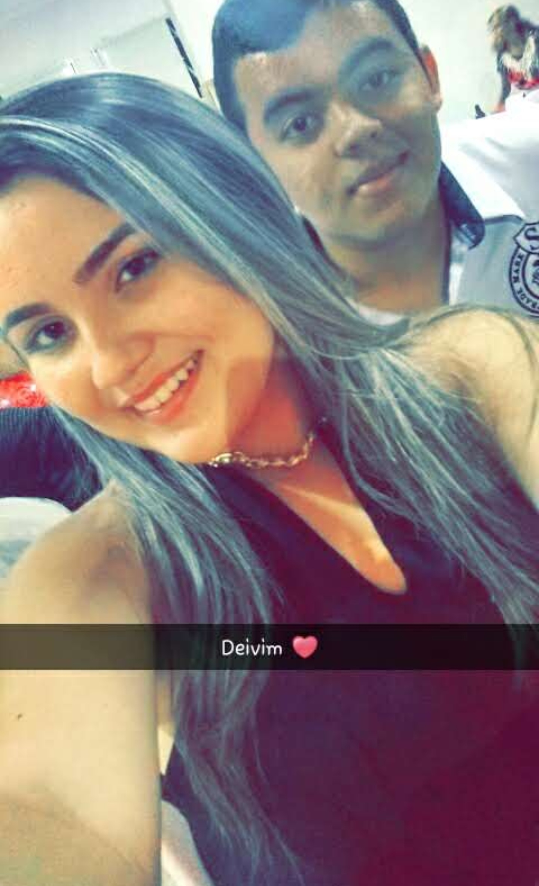
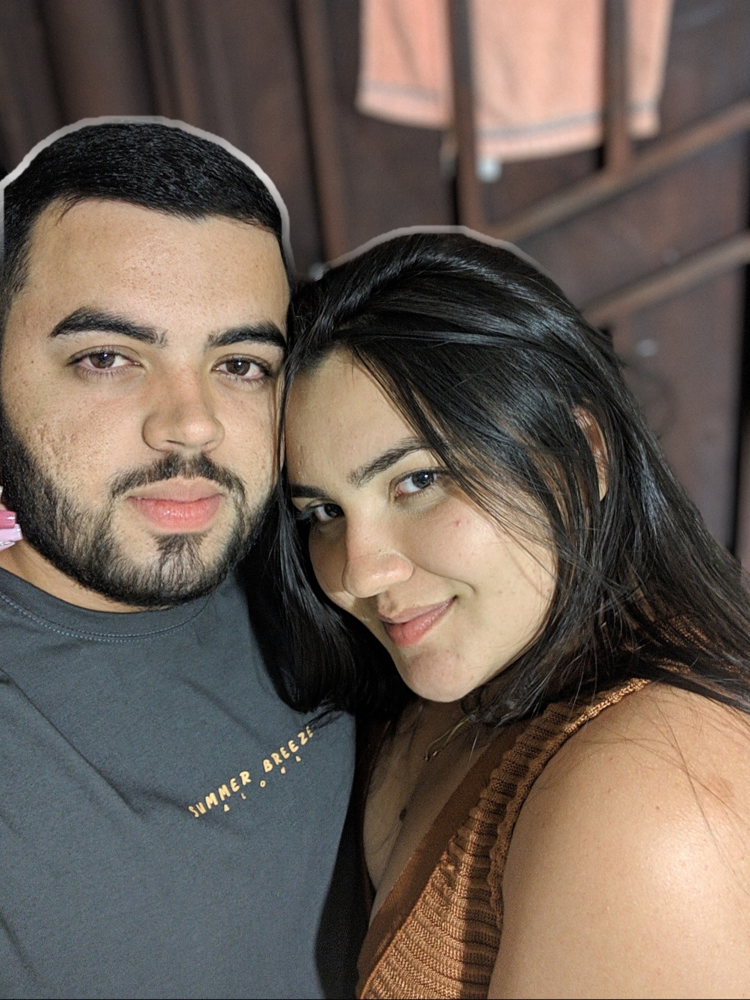

Onde Tudo Começou

Nossa história começou em 2014. Naquela época, a gente era só dois adolescentes fazendo Crisma, sem imaginar que aquele seria o começo de uma história que já dura mais de dez anos.
Lembro que você era toda envergonhada, eu também tinha meu jeito, mas bastou a gente conversar para as coisas acontecerem naturalmente. Depois descobri que você também gostava de mim, e dali em diante começou aquele romance de adolescente. A gente se encontrava para ficar, aproveitava qualquer oportunidade para estar junto e vivia tudo com uma intensidade que só aquela idade permite.
Até hoje eu lembro do dia em que seu pai pegou a gente ficando na escola. Na hora foi um desespero, mas hoje isso virou uma lembrança que faz parte da nossa história.

Depois a vida acabou levando cada um para um lado e a gente se afastou. Por um tempo parecia que tudo tinha acabado, mas, olhando para trás, acho que Deus só estava escrevendo mais um capítulo da nossa história.
Em 2016, nossos caminhos se cruzaram de novo. Voltei para a sua casa, a gente ficou, viveu aquele São João que até hoje eu lembro com carinho e parecia que o tempo nunca tinha passado. Era como se, por mais que a vida insistisse em nos afastar, ela sempre encontrasse um jeito de nos colocar frente a frente outra vez.
Quando chegou 2017, nós decidimos não começar um namoro porque eu iria embora para Natal. Talvez tenha sido a decisão que fazia mais sentido naquele momento, mas isso nunca significou que o sentimento tinha acabado. Você dizia que sentia raiva de mim. Eu nunca consegui entender completamente aquilo, mas também nunca deixei de perceber que, sempre que eu voltava, a gente acabava se encontrando de novo. Depois você sumia outra vez. Era uma fase estranha, cheia de idas e vindas, mas, de alguma forma, a nossa história continuava acontecendo.

Em 2020 veio o afastamento mais difícil. Você me dizia que não suportava mais a dor que eu tinha causado e decidiu seguir o seu caminho. Eu respeitei isso, mesmo sem querer. Mas Deus, mais uma vez, tinha outros planos.
No dia 03 de novembro de 2020, a gente resolveu tentar de novo. E, desde aquele dia, vivemos muita coisa juntos. Tivemos momentos inesquecíveis, enfrentamos dificuldades, passamos por fases boas e ruins, erramos, acertamos, crescemos e amadurecemos.
Se tem uma coisa que sempre ouvi durante todos esses anos, é que nós combinávamos. Muita gente sempre torceu por nós e acreditou na nossa história. E, sendo sincero, eu também sempre acreditei.
Hoje, olhando para tudo o que vivemos desde 2014, eu percebo que a nossa história nunca foi feita apenas de momentos fáceis. Ela foi construída por encontros, desencontros, recomeços e, principalmente, pela vontade que sempre existiu de um voltar para o outro.
Antes de falar sobre qualquer outra coisa, eu só queria que você lembrasse do começo. Porque, para mim, uma história como a nossa merece ser lembrada antes de qualquer decisão sobre o futuro.